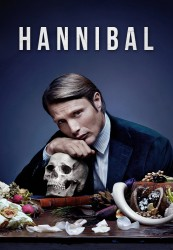

")
 
 IMDB-Wertung: 8.6 / 10
IMDB-Wertung: 8.6 / 10  Metascore:
Metascore: 
Einer ganz speziellen Gabe verdankt Will Graham seinen Job beim FBI. Er kann sich so stark in die Psyche von Mördern hineinversetzen, dass er deren Verbrechen vor seinem inneren Auge quasi selbst durchlebt. Dem psychisch labilen Spezialisten für Serienmorde wird von seinem Vorgesetzten, dem FBI-Agenten Jack Crawford, nun ausgerechnet Dr. Hannibal Lecter als psychiatrischer Berater zur Seite gestellt. Fortan ermittelt das ungleiche Gespann alltäglich gemeinsam an brutalen Serienmorden, ohne dass Graham ahnt, dass sein Partner nach Feierabend gerne selbst mal zum Schlachtermesser greift, um seine unkoventionellen kulinarischen Gelüste zu befriedigen.
Jahr: 2013
Dauer: 41 Minuten
FSK: 18
Land: USA Studio: NBCTonspuren: AAC2.0 - ,
Untertitel:
Auflösung: SD (720x404) Größe: 327 MB
Genre: Thriller, Horror, Drama, Krimi, Mystery, TV-Serie
Regisseur: Michael Rymer, Guillermo Navarro, Vincenzo Natali, David Slade, Tim Hunter, John Dahl, Peter Medak, James Foley, David Semel, Marc Jobst, Adam Kane, Neil Marshall
Drehbuch: Bryan Fuller
Soundtrack:
Darsteller:
 Hugh Dancy als Will Graham 39 episodes, 2013-2015
Hugh Dancy als Will Graham 39 episodes, 2013-2015 Mads Mikkelsen als Dr. Hannibal Lecter 39 episodes, 2013-2015
Mads Mikkelsen als Dr. Hannibal Lecter 39 episodes, 2013-2015 Caroline Dhavernas als Dr. Alana Bloom 39 episodes, 2013-2015
Caroline Dhavernas als Dr. Alana Bloom 39 episodes, 2013-2015 Laurence Fishburne als Jack Crawford 39 episodes, 2013-2015
Laurence Fishburne als Jack Crawford 39 episodes, 2013-2015 Aaron Abrams als Brian Zeller 27 episodes, 2013-2015
Aaron Abrams als Brian Zeller 27 episodes, 2013-2015 Gillian Anderson als Dr. Bedelia Du Maurier 22 episodes, 2013-2015
Gillian Anderson als Dr. Bedelia Du Maurier 22 episodes, 2013-2015 Katharine Isabelle als Margot Verger 9 episodes, 2014-2015
Katharine Isabelle als Margot Verger 9 episodes, 2014-2015 Eddie Izzard als Dr. Abel Gideon 6 episodes, 2013-2015
Eddie Izzard als Dr. Abel Gideon 6 episodes, 2013-2015 Richard Armitage als Francis Dolarhyde 6 episodes, 2015
Richard Armitage als Francis Dolarhyde 6 episodes, 2015 Joe Anderson als Mason Verger 4 episodes, 2015
Joe Anderson als Mason Verger 4 episodes, 2015 Cynthia Nixon als Kade Prurnell 4 episodes, 2014
Cynthia Nixon als Kade Prurnell 4 episodes, 2014 Tao Okamoto als Chiyo 4 episodes, 2015
Tao Okamoto als Chiyo 4 episodes, 2015 Anna Chlumsky als Miriam Lass 4 episodes, 2013-2014
Anna Chlumsky als Miriam Lass 4 episodes, 2013-2014 Nina Arianda als Molly Graham 4 episodes, 2015
Nina Arianda als Molly Graham 4 episodes, 2015 Michael Pitt als Mason Verger 3 episodes, 2014
Michael Pitt als Mason Verger 3 episodes, 2014 Daniel Kash als Carlo Deogracias 3 episodes, 2014
Daniel Kash als Carlo Deogracias 3 episodes, 2014 Glenn Fleshler als Dr. Cordell Doemling 3 episodes, 2015
Glenn Fleshler als Dr. Cordell Doemling 3 episodes, 2015 Mark Rendall als Nicholas Boyle 3 episodes, 2013
Mark Rendall als Nicholas Boyle 3 episodes, 2013 Patrick Garrow als Killer 3 episodes, 2014
Patrick Garrow als Killer 3 episodes, 2014 Dan Fogler als Franklin 3 episodes, 2013
Dan Fogler als Franklin 3 episodes, 2013 Jeremy Davies als Peter Bernardone 2 episodes, 2014
Jeremy Davies als Peter Bernardone 2 episodes, 2014 Chris Diamantopoulos als Clark Ingram 2 episodes, 2014
Chris Diamantopoulos als Clark Ingram 2 episodes, 2014 Zachary Quinto als Neal Frank 2 episodes, 2015
Zachary Quinto als Neal Frank 2 episodes, 2015 Mark O'Brien als Randall Tier 2 episodes, 2014
Mark O'Brien als Randall Tier 2 episodes, 2014 Demore Barnes als Tobias Budge 2 episodes, 2013
Demore Barnes als Tobias Budge 2 episodes, 2013 Dwight Ireland als Doctor 2 episodes, 2015
Dwight Ireland als Doctor 2 episodes, 2015 Ted Ludzik als Male Nurse / ... 2 episodes, 2014
Ted Ludzik als Male Nurse / ... 2 episodes, 2014 Jonathan Tucker als Matthew Brown 2 episodes, 2014
Jonathan Tucker als Matthew Brown 2 episodes, 2014 Tom Wisdom als Anthony Dimmond 1 episode, 2015
Tom Wisdom als Anthony Dimmond 1 episode, 2015 John Benjamin Hickey als Dr. Sutcliffe 1 episode, 2013
John Benjamin Hickey als Dr. Sutcliffe 1 episode, 2013 Molly Shannon als Kidnapper 1 episode, 2013
Molly Shannon als Kidnapper 1 episode, 2013 Jeremy Crutchley als Dr. Roman Fell 1 episode, 2015
Jeremy Crutchley als Dr. Roman Fell 1 episode, 2015 Mía Maestro als Allegra Pazzi 1 episode, 2015
Mía Maestro als Allegra Pazzi 1 episode, 2015 Julian Richings als Caged Man 1 episode, 2015
Julian Richings als Caged Man 1 episode, 2015Datei: X:\FSK18-Serien\Hannibal\S01\Hannibal S01E01 Töchter.mkv seit 02.03.2018
Festplatte: FSK18
 Es gibt insgesamt 17 Filme in der Gruppe 'FSK18-Serien'
Es gibt insgesamt 17 Filme in der Gruppe 'FSK18-Serien'